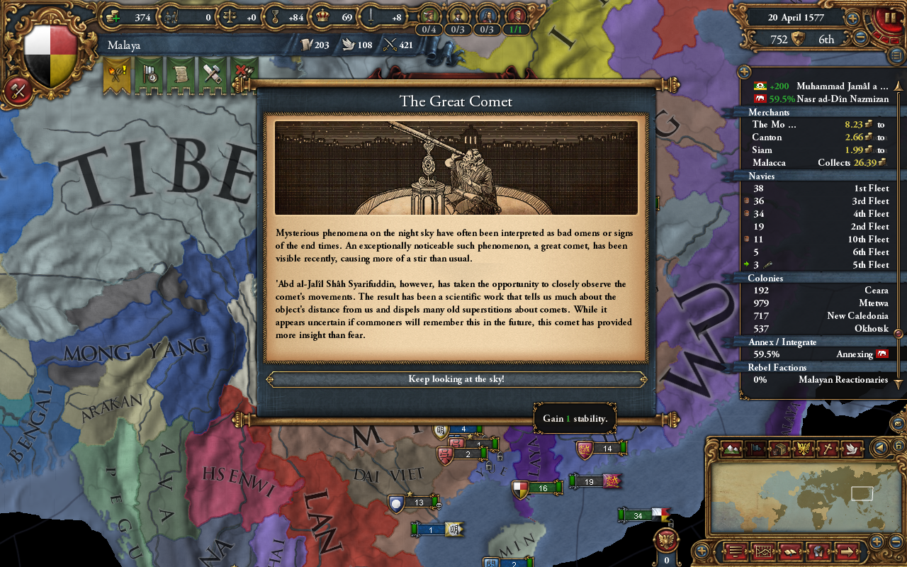
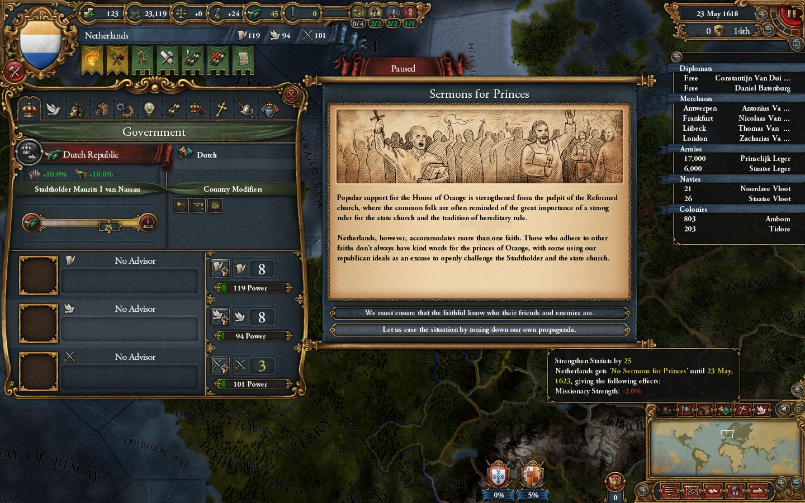
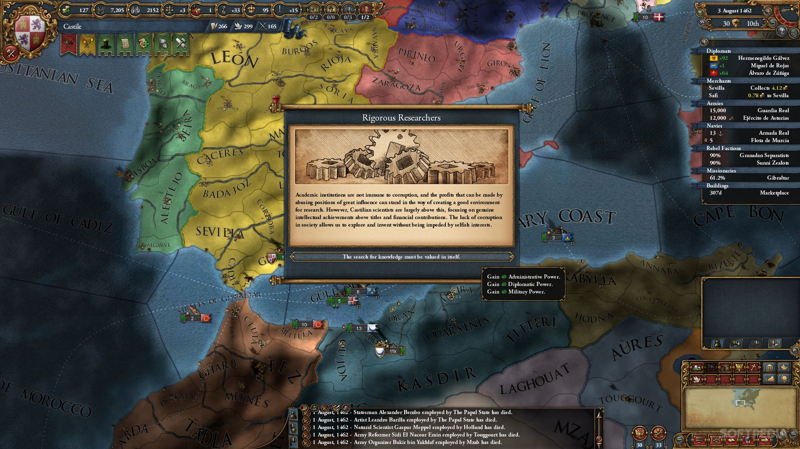

A grand strategy title covering the time period from 1444 to 1821. I worked on scripting and writing for four of the game's expansions.
For Conquest of Paradise, the mechanics for Native American nations were extended to include migration, unique buildings and federations. As part of this, I wrote several new events that reacted to and utilized the new features.

For Wealth of Nations, a system for choosing a deity to worship within the Hindu pantheon was added. I researched several branches of Hinduism to write relevant events allowing the player to pursue insights, rituals and celebrations appropriate for their chosen deity, sometimes interacting with other rulers.

In Res Publica, government forms were in focus. The Dutch Republic, the Elective Monarchy in Poland and the Merchant Republics were all given unique government mechanics. I designed and implemented events unique to each government type, which formed a central part of these mechanics.

Lastly, Art of War added many new military mechanics, some specifically to portray the 30 Years War. I designed and wrote events portraying both historical circumstances of this conflict, as well as alternate circumstances and outcomes dependent on the state of the game. Several new playable countries were also added in West Africa, which I also wrote special events for.